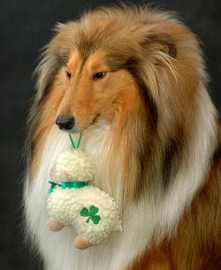

Догляд за шерстю
Догляд за шерстю собаки
Догляд за шерстю залежить насамперед від породи собаки. Але незалежно від породи систематичне розчісування щіткою видаляє з шерсті бруд і часточки відмерлого шкірного покриву, мертві волоски, запобігає звалюванню шерсті
Найпростіше доглядати за шерстю гладкошерстих собак: необхідно чистити собаку щіткою середньої твердості раз в 3-4 дні. Таке чищення-масування поліпшує стан не тільки шерсті, але й шкіри.
Для собак з шерстю середньої довжини і довгошерстих (колі, вівчарки, чау-чау) потрібен ретельний догляд. Вони розчісуються залежно від необхідності - приблизно 1-2 рази в тиждень - спеціальним гребінцем (рідким гребенем із закругленими тупими зубцями). М'яка шерсть акуратно обробляється щіткою - пуходеркою (раз у два місяці, при линці частіше). Собаку, що линяє, треба розчісувати щодня.
Шерсть жорсткошерстних собак (шнауцери, тер'єри) чиститься щодня щетинною щіткою або великою жіночою масажною щіткою з металевими зубчиками.
Маленькі собаки з ніжною шерстю вимагають особливого догляду. Обережно розчісуйте їх щодня, а від дощової погоди шерсть врятують водонепроникні комбінезони.
Крім розчісування, собакам (особливо виставочним) роблять "стрижки", а собак із твердою шерстю тримінгують (приблизно 2 рази в рік).
Тримінг заміняє линьку в жорсткошерстних собак, видаляючи відмерлі волоски, що заважають нормальному росту шерсті.
Особливого догляду вимагають борода і вуси, що вимащуються при годівлі. Після кожного прийому їжі вуси і бороду треба витерти ганчірочкою і розчесати. Це в першу чергу відноситься до ердельтер'єрів, керрі-блю-тер'єрів, різеншнауцерів.